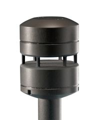

Este tipo de anemómetro crea una cámara de ondas estacionarias con ultrasonidos, que se deforman con el viento incidente. La medida del viento se realiza midiendo el cambio de las fases relativas de las ondas estacionarias. Es muy robusto y fiable.
